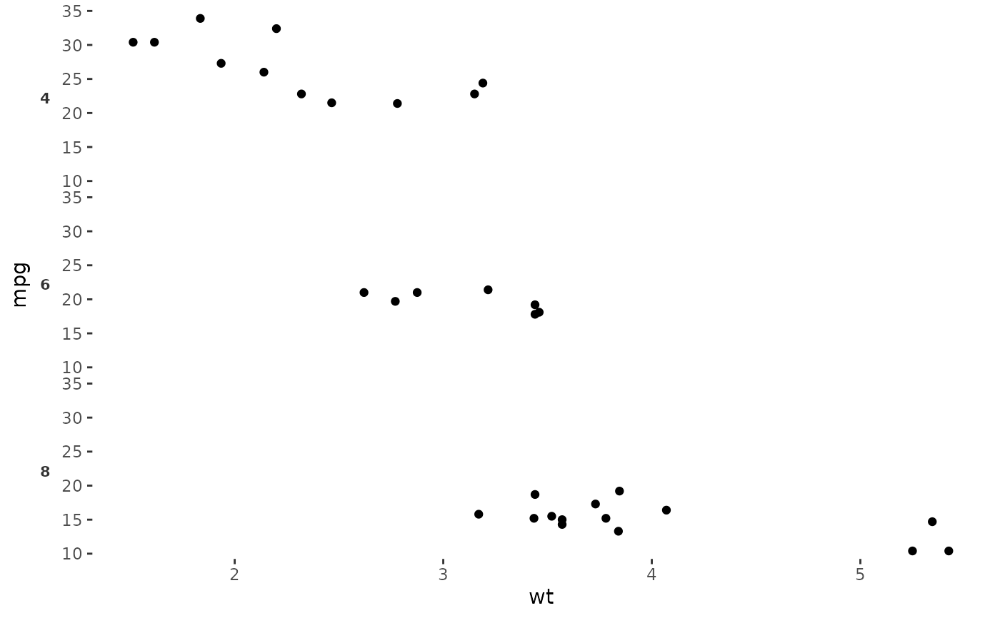

A theme helper for putting facet strip labels (e.g. species tracks) on the
left or right of the panels instead of stacked on top, which reclaims the
vertical row a top strip would otherwise occupy. This styles the side-strip
text so labels read horizontally and sit just outside the panels. The helper
shares theme_ggexon_base()'s blank backgrounds without replacing axes or
grids supplied by an existing complete theme.
Usage
theme_ggexon_side_strips(
side = c("right", "left"),
base_size = 8,
face = "bold",
background = NA
)Arguments
- side
"right"or"left". Must match thestrip.positionpassed tofacet_genomics().- base_size
Base font size for the strip text.
- face
Font face for the strip text (e.g.
"bold").- background
Strip-background fill colour.
NA(the default) or"none"draws no strip rectangle. A colour explicitly overrides the shared background-free default.
Details
The actual strip position is set by the facet, so pair this with
facet_genomics(strip.position = "<side>") using the same side.
Examples
p <- ggplot2::ggplot(mtcars, ggplot2::aes(wt, mpg)) +
ggplot2::geom_point() +
ggplot2::facet_wrap(ggplot2::vars(cyl), ncol = 1, strip.position = "left")
p + theme_ggexon_side_strips("left")
